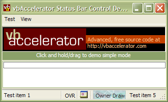

VB5 Status Bar Control Binary (17K)
VB5 Status Bar Control Binary (17K)
 VB5 Status Bar Control Full Source (96K)
VB5 Status Bar Control Full Source (96K)
 VB6 Status Bar Control Binary (17K)
VB6 Status Bar Control Binary (17K)
 VB6 Status Bar Control Full Source (98K)
VB6 Status Bar Control Full Source (98K)
 Bugs: 2 / 2
Bugs: 2 / 2
 Issues: 0 / 0
Issues: 0 / 0
 Questions: 0 / 0
Questions: 0 / 0
 19 Dec 2002
19 Dec 2002
VB6 version added.
Fixed bug when inserting panels, which led to some randomisation of the panel text and icons.
XP Style status bar now displayed from the demonstration.
 Subclassing Without The Crashes
Subclassing Without The Crashes
 vbAccelerator ImageList Control and Class v2.0
vbAccelerator ImageList Control and Class v2.0

vbAccelerator Status Bar Control
An implementation of the ComCtl32 status bar control from VB
This article provides a full implementation of the ComCtl32 status bar control in VB, providing access to all of the features including Owner-Drawn panels.
Using the StatusBar Control
The StatusBar control supports all the standard VB Status Bar features, plus:
- Create Owner-Draw status bar sections. When you set the panel style to Owner Draw, the control will fire an event whenever the status panel needs to be redrawn, passing the Device Context to draw into, the panel number and the bounding rectangle. You can either draw directly into the DC using GDI API methods or draw into a VB Picture Box with AutoRedraw set to True and BitBlt the Picture Box's contents into the DC. The demonstration code includes a sample owner draw panel which fills the panel with the Swimming Pool texture and then draws a centred caption in an arbitrary colour over the top. You could use the vbAccelerator Progress bar class to draw into this DC as well.
- Get the rectangle of any status bar panel. You can use this to position a control over any status bar panel, such as a TextBox or ComboBox.
- Auto-Tooltip support. If any of the text is hidden, or a panel has an icon and no text, the control will show a tooltip.
- Icons in Panels. Any panel can display an icon from a ComCtl32.DLL compatible ImageList. Note that the VB6 Common Controls (MSComCtl.OCX) ImageList is not compatible with ComCtl32.DLL so you will need to use one of the vbAccelerator alternatives.
- Change StatusBar background colour.
Quickstart
The main tasks in creating a status bar are as follows:
- Associating an Image List
Use the ImageList property to associate either a VB5 ImageList control or the hImageList of a vbAccelerator or API created ImageList - Adding Panels
The AddPanel method allows you to add and insert panels, as well as setting almost all of the panel properties at the same time:Public Function AddPanel( _ Optional ByVal eStyle As ESTBRPanelStyle = estbrStandard, _ Optional ByVal sText As String = "", _ Optional ByVal sToolTipText As String = "", _ Optional ByVal iImgIndex As Long = -1, _ Optional ByVal lMinWidth As Long = 64, _ Optional ByVal bSpring As Boolean = False, _ Optional ByVal bFitContents As Boolean = False, _ Optional ByVal lItemData As Long = 0, _ Optional ByVal sKey As String = "", _ Optional ByVal vKeyBefore As Variant _ ) As LongAvailable panel styles are:- estbrStandard: Standard panel.
- estbrNoBorders: Panel with no borders.
- estbrRaisedBorder: Panel with a raised border.
- estbrTooltips: Show tooltips, can be combined with any other style.
- estbrOwnerDraw: Panel is not drawn, a DrawItem event is raised to your code.
- estbrCaps: Small panel showing the Caps Lock state.
- estbrNum: Small panel showing the Num Lock state.
- estbrIns: Small panel showing the Insert/Overwrite state.
- estbrScrl: Small panel showing the Scroll Lock state.
- estbrTime: Panel displaying the time using the locale short time format.
- estbrDate: Panel displaying the date using the locale short date format.
- estbrDateTime: Panel displaying the date and time using the locale short date and time formats.
- Modifying Panel properties
For each of the panel properties there is an associated Panel[xxx] property which takes the Key of the panel as a parameter. - Removing Panels
The RemovePanel method removes the panel with the specified key.
Enabling XP Styles
As with all of the Common Controls in XP and above, the new XP styles will not be enabled unless you include an application manifest to associate your application with version 6.0 of ComCtl32.DLL. See the article "Using XP Visual Styles in VB" for more details on how to do this. The demonstration project includes a simple file-based manifest.